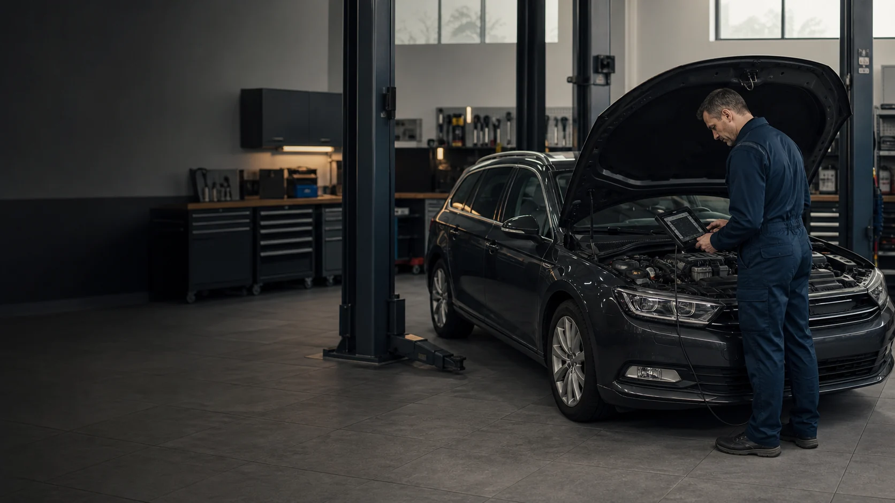

Diagnoza
Sprawdzamy objawy i szukamy przyczyny.

Mechanik samochodowy • Warszawa-Włochy
Pełny zakres usług z pierwotnej oferty Luka Service. Sprawdzamy samochód, przedstawiamy koszt i zaczynamy pracę dopiero po Twojej akceptacji.
Bez dodatkowych prac bez zgody klienta
Z czym możemy pomóc
Najpierw wybierz obszar. Pełny zakres każdej kategorii znajdziesz niżej - bez ukrywania usług i bez ściany drobnego tekstu na pierwszym ekranie.
Od kontrolek i trudnego rozruchu po ABS/SRS, kluczyki i zawieszenie pneumatyczne.
Poznaj zakres ↗SERHamulce, filtry, DPF, rozrząd, zawieszenie, płyny i codzienna eksploatacja auta.
Poznaj zakres ↗MECHNaprawy silnika, chłodzenia, wydechu, układu kierowniczego i elementów napędu.
Poznaj zakres ↗MOBSamochód nie odpala? Po kontakcie sprawdzimy, czy możemy pomóc na miejscu.
Poznaj zakres ↗Jak pracujemy
Porządek obsługi jest częścią usługi. Wiesz, co dzieje się z samochodem, zanim podejmiesz decyzję o naprawie.
Sprawdzamy objawy i szukamy przyczyny.
Otrzymujesz zakres, koszt i możliwe warianty.
Zaczynamy dopiero po Twojej akceptacji.
Weryfikujemy efekt przed wydaniem auta.
Transparentność
Przykładowa wycena
Zamiast branżowego żargonu - konkret: co wymaga naprawy, co jest pilne, ile może potrwać praca i od czego zależy koszt.
Pełna oferta
Rozwijane kategorie utrzymują porządek na stronie, a jednocześnie dają Google i klientowi pełny obraz rzeczywistej oferty.
Przed wizytą
Tak. Po sprawdzeniu auta przedstawiamy zakres prac i wycenę. Dodatkowe prace wykonujemy dopiero po akceptacji.
Tak, po wcześniejszym kontakcie. Najpierw ustalamy objawy i lokalizację, aby ocenić, czy naprawa na miejscu jest możliwa.
Wystarczy podać model auta, opisać objawy i powiedzieć, kiedy problem występuje. Jeśli masz wcześniejsze wyniki diagnostyki, zabierz je ze sobą.
Tak. Zakres sprawdzenia i termin ustalamy telefonicznie przed wizytą.
Kontakt i lokalizacja
Podaj model samochodu i powiedz, kiedy pojawia się problem. Ustalimy możliwy termin i właściwy zakres sprawdzenia auta.